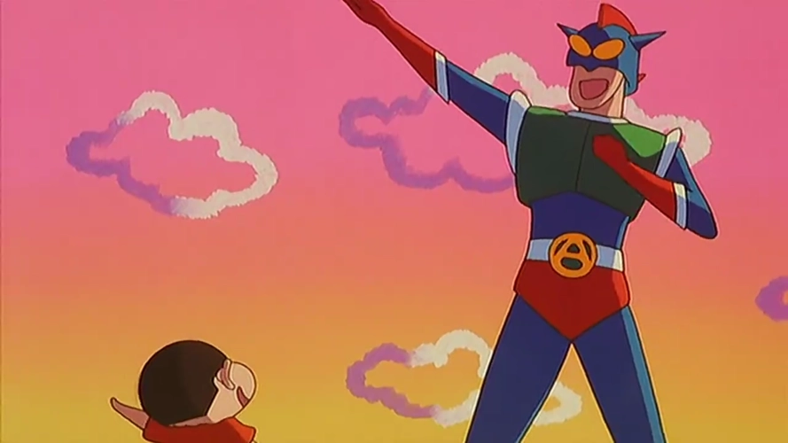
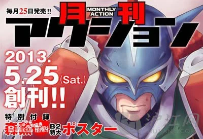

| 我的兴趣和理想 |
|  | 动感超人是蜡笔小新中衍生的角色。 小新最大的兴趣就是每天观看动感超人并且经常想象自己是动感超人维护世界。 |
| 动感超人的介绍 |
|  | 动感铁拳 此技是动感超人的独创绝技之一。一拳有五吨重量，他可将全身的力气聚集在一只胳膊的拳头上挥舞出去打倒敌人。此技方便使用而且不费体力，为动感超人最喜欢而且最常用的一个招数。由于力量过大，足以将铁制的饼铛打坏，敌人一旦中招很难承受巨大的压力，此技属于物理攻击，虽然强大而且不费太多体力但命中率较低，很难消灭敏捷度高的敌人。 动感光波 此技是动感超人的独创绝技之一。它将能量由全身集中到肘部，以高热量射线为形式，辅以光波中的高压电流，放出身体里的能量以击伤敌人（此光波为何能传导电流，还是一个谜）。受到此绝技攻击者，一般会出现烤焦、炸飞的结果。此技能杀伤力很大，一般用于最后一击，激射后妖怪就会爆破。 动感光波球 此技是动感超人的独创绝技之一。他将动感光波的能量集中成一个闪光的电球状，然后向敌人扔出。受到此绝技攻击者，一般会出现烤焦、炸飞的结果。此技能杀伤力很大，一般用于最后一击。 动感光波台风 此技是动感超人的独创绝技之一。就是让动感超人站在台风眼中心，产生高速旋转的巨大的风，一下子可以打败所有敌人的招数，用于大规模作战。 动感回旋闪电 此技是动感超人的独创绝技之一。就是动感超人在空中翻转且越来越快，这样就产生了多条条形闪电，可以打败很多敌人。此招杀伤力有限，只能短暂杀伤敌人，主要是为自己赢得时间。 动感光碟 此技是动感超人的独创绝技之一。就是将能量集中在右手食指，做成光碟状发射出去，能够将敌人削成两半。用于对付强大敌人的最后一击。 动感跳跃 动感超人的绝技之一，一跳的高度有20公尺。 动感超人节目曾经开展必杀技征集活动，小新原本设计的必杀技是动感回力标，但广志不小心把美伢教训小新的影片发送过去结果却误打误撞被选中，起名为动感拳头转转。 |